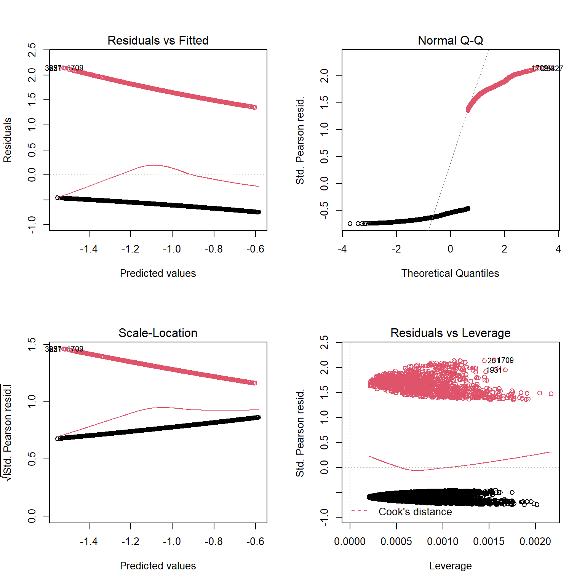
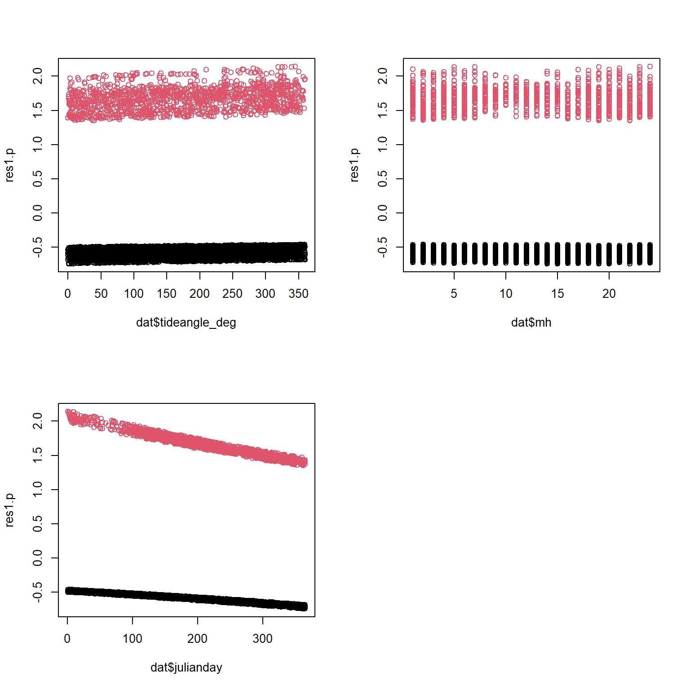
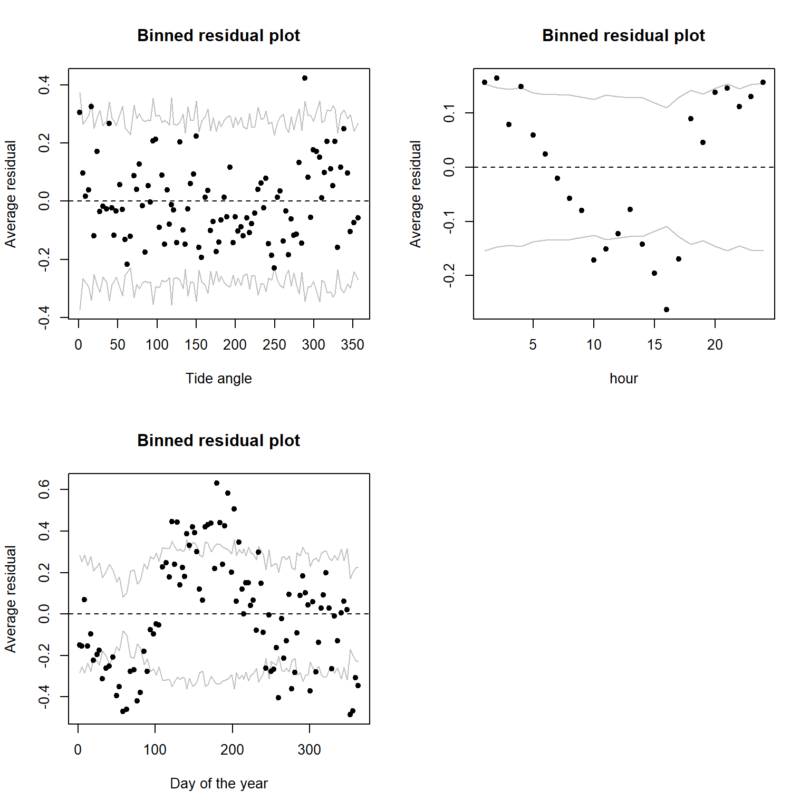
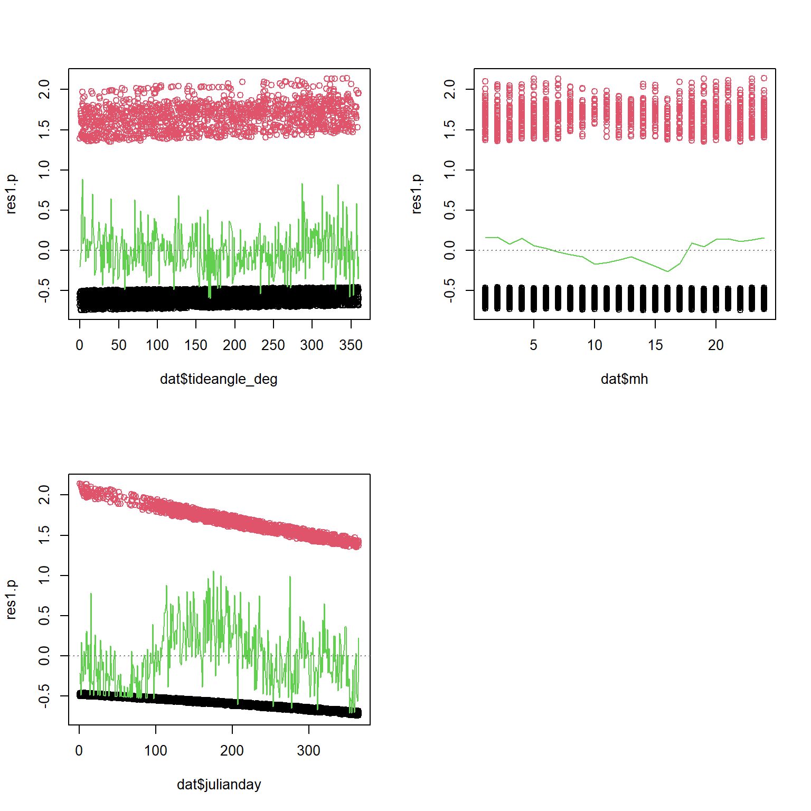
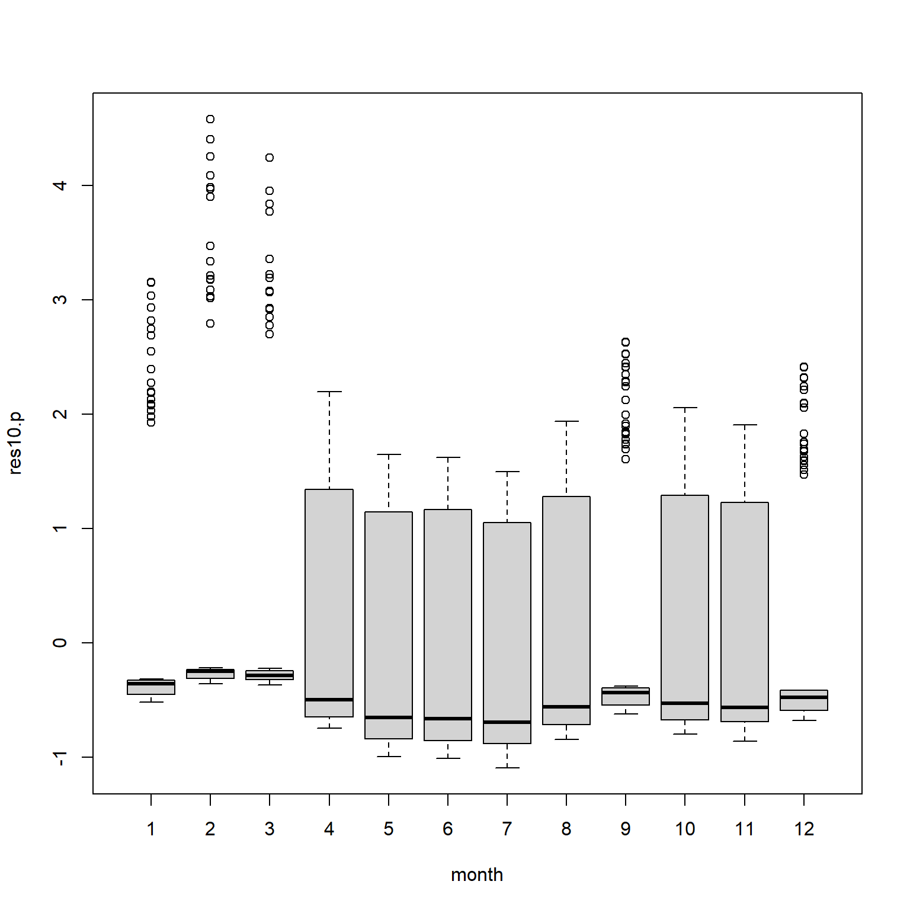
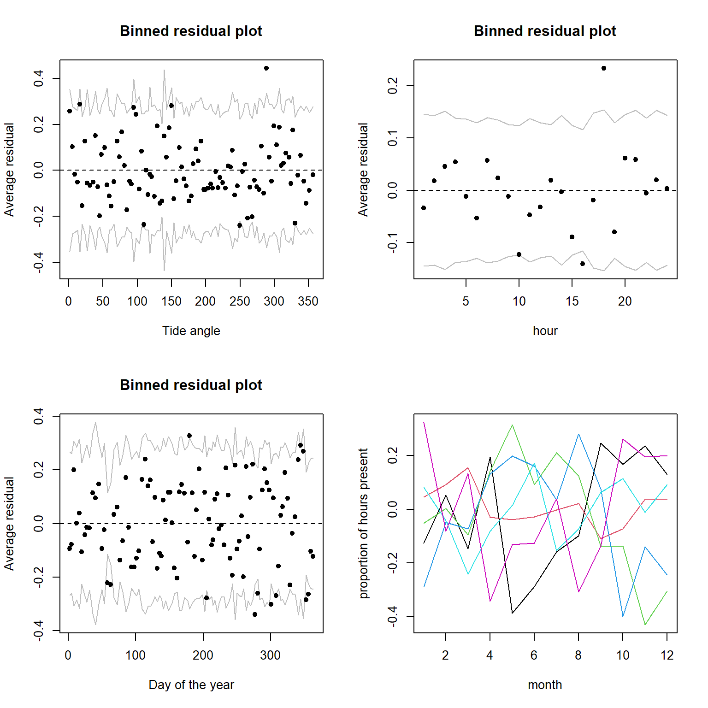
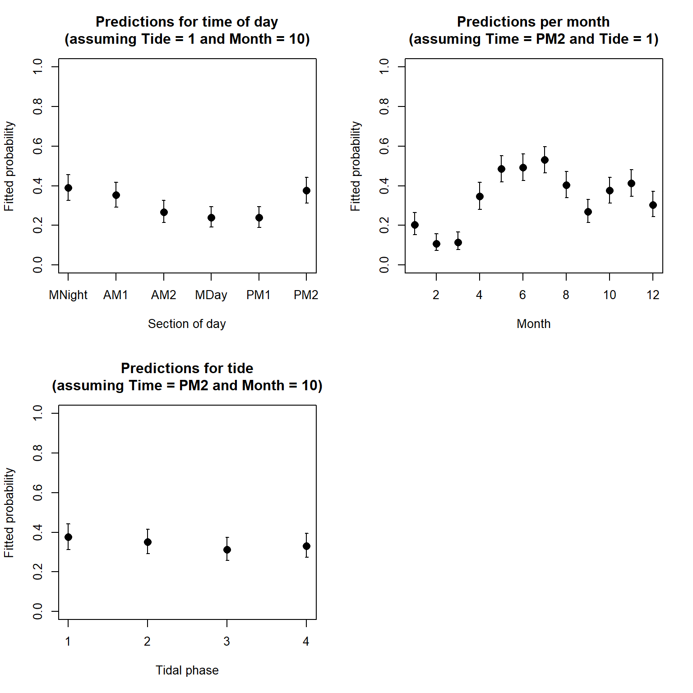
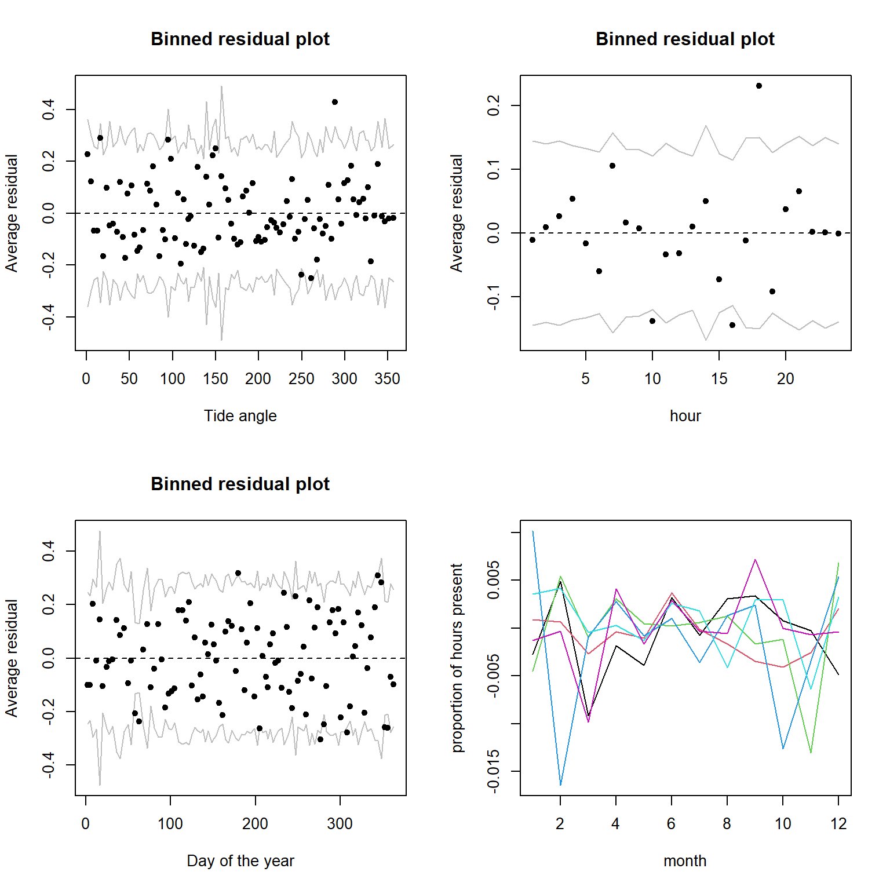
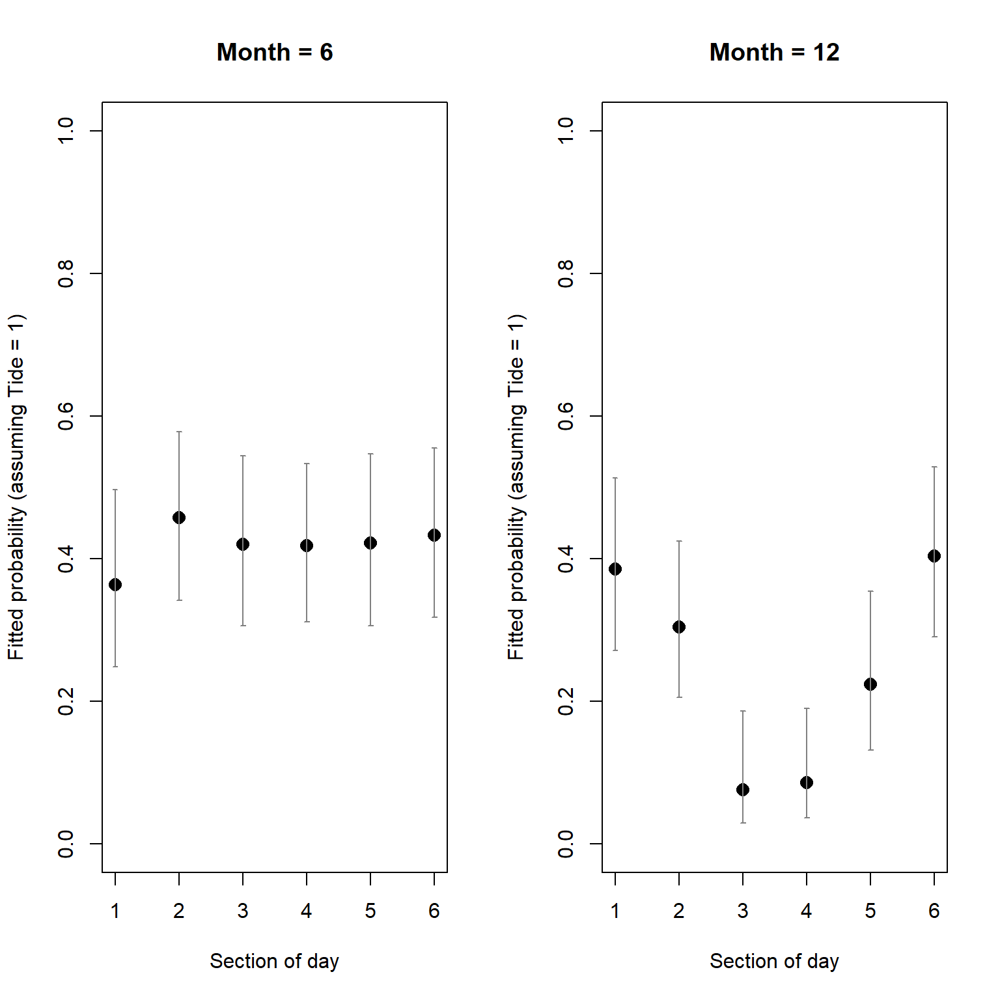
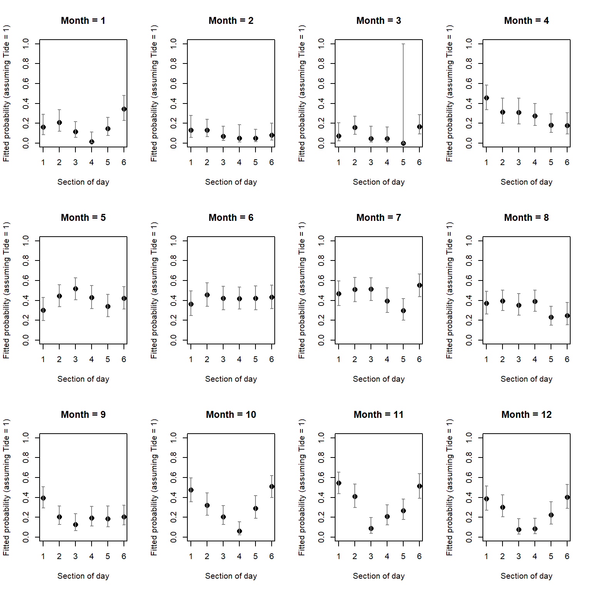

Exercise Solutions
Binomial (Bernoulli) GLM - dolphin behavioural plasticity
1. The data for this exercise were collected by the Cromarty Lighthouse team, using underwater sound recorders (CPOD) to continuously monitor the pattern of presence and foraging behaviour of bottlenose dolphins at Sutors, in the Moray Firth, between 2010 and 2016. Additional background for this study is provided at the end of the exercise, in case of interest.
Variables:
Xindex of the observationspresence: 0 for absence, 1 for presence in 1h time slot. Note that “absence” refers to the absence of a detection, not to the absence of dolphins. We can ignore this in the analysis, but we should keep it in mind when interpreting the results.yearjulianday: day of the yeartideangle_deg: continuous tidal state, from high to ebb, low and floodmh: hour of the day (integer)mon: month (integer)Time6: Bin time of day into 6 4h periods: MNight (2200-0200); AM1 (0200-0600); AM2 (06:00-10:00); MDay (10:00-14:00); PM1 (14:00-18:00); PM2 (18:00-22:00)Tide4: Bin tide angle into 4 quadrants with tide peaks (high, descending, low, rising) in middle of respective bin
It has been suggested that the patterns of use of coastal foraging sites by this dolphin population is quite variable over time. The goal of this exercise is to describe variation in dolphin probability of presence in relation to factors like tidal state, time of day and season.
As in previous exercises, either create a new R script (perhaps call it GLM_PresAbs) or continue with your previous R script in your RStudio Project. Again, make sure you include any metadata you feel is appropriate (title, description of task, date of creation etc) and don’t forget to comment out your metadata with a
#at the beginning of the line.
2. Import the data file ‘dolphin.csv’ into R (a “small” 5000 records-long subset of the original data set) by running the following chunk of code (please unfold and copy/paste - adjust the path as required).
dat<- read.csv("./data/dolphin.csv", stringsAsFactors= T)
dat$Time6<- factor(dat$Time6, levels= c("MNight", "AM1", "AM2", "MDay", "PM1", "PM2"))
# reordering chronologically
str(dat)## 'data.frame': 5000 obs. of 9 variables:
## $ X : int 31458 14027 40551 40456 15894 13109 23797 6053 23445 34584 ...
## $ presence : int 0 1 0 0 1 0 0 0 0 0 ...
## $ year : int 2014 2011 2015 2015 2011 2011 2013 2010 2012 2014 ...
## $ julianday : int 59 226 80 76 312 188 102 256 327 192 ...
## $ tideangle_deg: int 247 356 176 299 127 75 44 73 180 103 ...
## $ mh : int 8 13 7 8 3 7 3 6 14 15 ...
## $ mon : int 2 8 3 3 11 7 4 9 11 7 ...
## $ Time6 : Factor w/ 6 levels "MNight","AM1",..: 3 4 3 3 2 3 2 2 4 5 ...
## $ Tide4 : int 4 1 3 4 2 2 1 2 3 2 ...
3. Take a look at the structure of this dataframe, and do an initial data exploration.
- Some things you could focus on are:
- look at any correlation/data imbalance (different sample sizes between portions of a predictor variable) for all predictors, or useful combinations of predictors (for example
yearandmonth,Tide4and time of daymh) - look for factors affecting the probability of presence of dolphins (proportion of time present). Which ones are continuous or categorical? Which ones would your intuition guide you to use for modelling?
- look at any correlation/data imbalance (different sample sizes between portions of a predictor variable) for all predictors, or useful combinations of predictors (for example
- Notes:
- Presence/absence data (Bernoulli) are more difficult than most to explore.
- One approach for data imbalance is to count observations per categories of interest.
table()is a useful way to count the number of observations per category or combinations of categories, e.g.ObsPerMonthYear<- table(dat$year, dat$mon)plot(ObsPerMonthYear)returns a “mosaic plot” where the area of each rectangle is proportional to the count.- For factors affecting the proportion of time present, you could calculate mean presence per category, which is the proportion of time present:
bla<- tapply(dat$presence, list(dat$GroupOfInterest), mean)and plot this usingplot(bla, type= "b", ylim= c(0, 1), xlab= "GroupOfInterest", ylab= "presence") - In more than one dimension,
tmp<- tapply(dat$presence, list(dat$Group1, dat$Group2), mean)calculates the proportion of time present for each combination of Group1 and Group2, andmatplot(tmp, type= "l", ylim= c(0, 1), xlab= "Group1", ylab= "presence", lty= 1)plots the proportion of time present against Group1, with a separate line per Group2 categories.
# count observations per year/month combination and represent as mosaicplot
plot(table(dat$year, dat$mon))
# CPOD failure in Feb-April 2012 and Dec 2012-March 2013
plot(table(dat$mh))
# fairly even representation of hours
# (that's on the random sample; Almost perfectly balanced on the full dataset)
# we should have no problem using 'mh' as a predictor in the model
plot(table(dat$Tide4, dat$mh))
# even representation of tides
# time of day and tidal phase not independent (but not a linear correlation)
# This is balanced enough that we should have no problem using 'mh', Tide4
# or their interaction as predictors in the model.
#### Now, investigating variation in probability of encounter:
#
# presence in relation to time of day
mean.per.mh<- tapply(dat$presence, list(dat$mh), mean)
plot(mean.per.mh, type= "l", ylim= c(0, 1),
xlab= "time of day", ylab= "proportion of hours present")
# Probability slightly lower in the middle of the day
# are there seasonal patterns?
mean.per.mon<- tapply(dat$presence, list(dat$mon), mean)
plot(mean.per.mon, type= "l",
ylim= c(0, 1), xlab= "month", ylab= "proportion of hours present")
# Probability of presence lower in Jan-March?
# presence in relation to tide
mean.per.Tide4<- tapply(dat$presence, list(dat$Tide4), mean)
plot(mean.per.Tide4, type= "b", ylim= c(0, 1),
xlab= "tidal phase",
ylab= "proportion of hours present")
# No obvious effect of tidal phase on average?
# If interested, we could also ask more complex questions, involving interactions between predictors, for example:
# are seasonal patterns similar between years?
# let's calculate the mean per month for each year,
# and plot the seasonal pattern lines for individual years together
mean.per.month.year<- tapply(dat$presence, list(dat$mon, dat$year), mean)
# (month in rows, years in columns)
# matplot draws one line per column (year)
matplot(mean.per.month.year, type= "l",
ylim= c(0, 1), xlab= "month", ylab= "proportion of hours present")
legend(x= "topleft", legend= colnames(mean.per.month.year),
bty= "n", # no bounding box for the legend
col= 1:ncol(mean.per.month.year),
lty= 1:ncol(mean.per.month.year),
title= "Year")
# This suggests broadly similar seasonal patterns of variation across years,
# with very low probability of presence from Jan to March
# We could also explore if the effect of some predictors changes between seasons:
# Seasonal variation in diel pattern
mean.per.month.Time6<- tapply(dat$presence, list(dat$mon, dat$Time6), mean)
matplot(mean.per.month.Time6, type= "l",
ylim= c(0, 1),
xlab= "month", ylab= "proportion of hours present", lty= 1)
legend(x= "topleft", legend= colnames(mean.per.month.Time6),
bty= "n", # no bounding box for the legend
col= 1:ncol(mean.per.month.Time6),
lty= 1:ncol(mean.per.month.Time6),
title= "Time6")
# stronger diel pattern in later part of the year:
# the lines for different parts of the day diverge quite
# strongly from Sept to Jan.
# are seasonal patterns similar between Tide4 levels?
# let's calculate the mean per month for each tidal stage,
mean.per.month.Tide4<- tapply(dat$presence, list(dat$mon, dat$Tide4), mean)
matplot(mean.per.month.Tide4, type= "l",
ylim= c(0, 1),
xlab= "month", ylab= "proportion of hours present", lty= 1)
legend(x= "topleft", legend= colnames(mean.per.month.Tide4),
bty= "n", # no bounding box for the legend
col= 1:ncol(mean.per.month.Tide4),
lty= 1:ncol(mean.per.month.Tide4),
title= "Tide4")
# no dramatic change in pattern of tide use across seasons,
# as all the lines follow a broadly similar trajectory:
# the probability of sighting is mostly affected by season.
# There are variations among tide levels but more subtle.
# Would such an interaction turn out to be significant in a model?
4. We will start with a toy model, to get you started thinking about the problem. You will need to specify a Binomial (Bernoulli) GLM (using glm() and the appropriate family argument). Let’s include the main effects of numerical time of day, tide angle and day of the year as predictors: tideangle_deg + mh + julianday.
PA1<- glm(presence ~ tideangle_deg + mh + julianday, family= binomial, data= dat)
5. Obtain summaries of the model output using the summary() function. Make sure you understand the mathematical and biological interpretation of the model, by writing down the complete model on paper (with distribution and link function). What biological hypothesis does each term imply, qualitatively? Is this model biologically sensible?
summary(PA1)
##
## Call:
## glm(formula = presence ~ tideangle_deg + mh + julianday, family = binomial,
## data = dat)
##
## Deviance Residuals:
## Min 1Q Median 3Q Max
## -0.9415 -0.8169 -0.7209 1.4783 1.8553
##
## Coefficients:
## Estimate Std. Error z value Pr(>|z|)
## (Intercept) -1.4029082 0.1067073 -13.147 < 2e-16 ***
## tideangle_deg -0.0004407 0.0003172 -1.389 0.165
## mh 0.0011997 0.0047256 0.254 0.800
## julianday 0.0021864 0.0003174 6.889 5.63e-12 ***
## ---
## Signif. codes: 0 '***' 0.001 '**' 0.01 '*' 0.05 '.' 0.1 ' ' 1
##
## (Dispersion parameter for binomial family taken to be 1)
##
## Null deviance: 5738.9 on 4999 degrees of freedom
## Residual deviance: 5688.4 on 4996 degrees of freedom
## AIC: 5696.4
##
## Number of Fisher Scoring iterations: 4
# Model description:
# presence ~ Bernoulli(p) or presence ~ Binomial(N= 1, p)
# log(p / (1-p)) =
# -1.40*(Intercept) + -0.00044*tideangle_deg + 0.0012*mh
# + 0.0022*julianday
# "(Intercept)" general intercept
# "tideangle_deg" main effect of tide angle, assumes a linear decrease
# (negative coefficient) of probability of presence from high to flood stages
# "mh" main effect of time of day, assumes a linear increase
# of probability of presence from the first hour of the day to the last
# "julianday" main effect of day of year, assumes a linear increase
# of probability of presence from 1st Jan to 31st Dec
# Note that interpretations above are linear effects on the link scale,
# but sigmoidal on the probability scale, thanks to the logit link
6. Let’s now validate the model, using deviance residuals. The easiest tool is the binnedplot() in the arm package, if you can. If you cannot install the arm package and access its binnedplot, use the “DIY” alternative code chunk further down.
library(car)
vif(PA1)
## tideangle_deg mh julianday
## 1.002136 1.001948 1.000203
# No concern.
par(mfrow= c(2, 2))
plot(PA1, col= dat$presence + 1) # red is presence, black is absence
# Not very useful or pretty statistical art. Not worth framing.
# plot against predictors:
res1.p<- resid(PA1, type= "pearson")
par(mfrow= c(2, 2))
plot(res1.p ~ dat$tideangle_deg, col= dat$presence + 1)
plot(res1.p ~ dat$mh, col= dat$presence + 1)
plot(res1.p ~ dat$julianday, col= dat$presence + 1)
# Can't see anything useful.
# Use arm if you can:
library(arm)
par(mfrow= c(2, 2))
binnedplot(x= dat$tideangle_deg, y= res1.p, xlab= "Tide angle", nclass= 100)
binnedplot(x= dat$mh, y= res1.p, xlab= "hour")
binnedplot(x= dat$julianday, y= res1.p, xlab= "Day of the year", nclass= 100)
# clearly some unwanted patterns, especially in mh and julianday
# but possibly in tide angle, too
# all pointing at non-linear effects of the predictors on the response
# This is rather expected indeed: for example, it wouldn't make biological
# sense for the probability of presence to go up from 00:01 am to 23:59 pm,
# and then drop suddently after midnight to start low again at
# 00:01 the next day. Dolphins don't evaporate at midnight.
# The same reasoning applies for the other cycles, tide and season
In case needed, a home-made alternative to the binnedplot function:
par(mfrow= c(2, 2))
# plot the residuals against tideangle_deg
plot(res1.p ~ dat$tideangle_deg, col= dat$presence + 1)
# get the mean of the residuals for each 1 degree bin of tideangle_deg
tide.means<- tapply(res1.p, list(dat$tideangle_deg), mean)
# convert ordered bin labels into numbers (1 to 360)
tide.vals<- as.numeric(names(tide.means))
# plot residual means against bin number
lines(tide.means ~ tide.vals, col= 3)
# add horizontal line at y= 0 for reference
abline(h= 0, lty= 3, col= grey(0.5))
# same idea for hour of the day:
plot(res1.p ~ dat$mh, col= dat$presence + 1)
hour.means<- tapply(res1.p, list(dat$mh), mean)
lines(hour.means ~ as.numeric(names(hour.means)), col= 3)
abline(h= 0, lty= 3, col= grey(0.5))
# same for julianday:
plot(res1.p ~ dat$julianday, col= dat$presence + 1)
day.means<- tapply(res1.p, list(dat$julianday), mean)
lines(day.means ~ as.numeric(names(day.means)), col= 3)
abline(h= 0, lty= 3, col= grey(0.5))
# Same story.
7. Are you happy with the diagnostic plots? Is there something you could do to improve the model while addressing the initial question(s)? Spend some time looking at the available predictors, and working out what your model should look like, before reading the hints in the code chunk below. If you have relevant biological information, or insight from your data exploration that suggests a better approach than what is indicated below, feel free to try it for comparison.
# Please take the time to think before unfolding the next code chunk
# The issue is that the effects of these predictors are not linear
# on the logit (link) scale.
# There are several ways the non-linearity could be addressed.
# one of the most straightforward with glm() is to discretize
# continuous predictors into bins and to treat them as factors.
# In this way, a mean is estimated per category of the variable,
# and no assumption is made about the shape of the relationship.
# Each of the predictors we started with already has one or more
# categorical counterpart in the data set.
# I suggest you try fTide4 + fMonth + Time6, with fTide4 and
# fMonth being the factor version of Tide4 and mon (both need creating).
8. Fit the new version of the model. Are all the terms significant? If not, simplify the model. Remember to choose the correct ANOVA method (sequential or not), and the appropriate test. What is the proportion of deviance explained?
# convert numerically coded categorical variables into factors:
dat$fTide4<- factor(dat$Tide4)
dat$fMonth<- factor(dat$mon)
PA10<- glm(presence ~ fTide4 + fMonth + Time6, family= binomial, data= dat)
drop1(PA10, test= "Chisq")
## Single term deletions
##
## Model:
## presence ~ fTide4 + fMonth + Time6
## Df Deviance AIC LRT Pr(>Chi)
## <none> 5331.9 5371.9
## fTide4 3 5341.4 5375.4 9.46 0.02375 *
## fMonth 11 5659.0 5677.0 327.08 < 2.2e-16 ***
## Time6 5 5411.7 5441.7 79.83 9.113e-16 ***
## ---
## Signif. codes: 0 '***' 0.001 '**' 0.01 '*' 0.05 '.' 0.1 ' ' 1
# all terms significant; nothing to drop
# out of interest, the total proportion of deviance explained is
(PA10$null.deviance - PA10$deviance) / PA10$null.deviance # 7%
## [1] 0.07092263
9. Do the model validation for the minimal adequate model. Is everything looking good?
# plot against predictors:
res10.p<- resid(PA10, type= "pearson")
boxplot(res10.p ~ dat$fMonth, xlab= "month")
# boxplot is not a great way to diagnose issues, due to the odd distribution of residuals in the logistic regression
library(arm)
par(mfrow= c(2, 2))
binnedplot(x= dat$tideangle_deg, y= res10.p, xlab= "Tide angle", nclass= 100)
# okay
binnedplot(x= dat$mh, y= res10.p, xlab= "hour")
# okay
binnedplot(x= dat$julianday, y= res10.p, xlab= "Day of the year", nclass= 100)
# julianday is not strictly a predictor in the model,
# but there is no certainty that month is a good way
# to describe temporal variation (a calendar month is
# quite an arbitrary from a dolphin's point of view).
# Plotting against julian day allows to check this further.
# All good so far
# We can also check if there might be more complex patterns not accounted
# for by the model, for example interactions between the variables.
# Check seasonal variation in diel pattern again ("time by season" interaction):
matplot(tapply(res10.p, list(dat$mon, dat$Time6), mean), type= "l",
xlab= "month", ylab= "proportion of hours present", lty= 1)
# still residual variation in diel pattern in later part of the year
# (not surprising as there is nothing in the model aiming at capturing this)
10. Assuming that the model is fine as it is, let’s plot the predictions for the probability of presence in relation to time of day fTime6. You will need to set the value of other predictors fTide4, fMonth at a fixed level of your choice, e.g. “1”. Optionally, you can add the confidence intervals around the predictions (highly recommended in a report).
- Calculation of confidence intervals:
- As for the Poisson GLM, you will need to calculate the lower and upper bounds of the 95% CI on the link scale (same method)
- Only then convert these to the response scale
- Don’t forget that the link function is different though, and so is the function for the back-transformation
- In R you can do the back-transformation yourself using the equation provided in the lecture, or use the pre-made
plogisfunction.
- Suggested approach:
- create a
data.framecalledXcontaining the data to predict for. - use
predict()with the appropriate options to obtain the fitted values on the link scale and for being able to calculate the confidence intervals later. Store in objectZ. - I suggest you plot the predictions for each level of your categorical predictor as dots using
plot(Z$fit). (Some people prefer bars usingbarplot(Z$fit), but this can make drawing confidence intervals slightly harder) - in X, add columns for the fitted values and their confidence intervals, on the response scale (to be calculated).
- Because in the model the predictions are for categorical predictors, you will need to draw a vertical error bar for each predicted value
- This can be done using the
arrowsfunction, with argumentsx0andy0, the X,Y coordinates of the starting point of the arrows, andx1andy1, the X,Y coordinates of the end point of the arrows. See?arrowsfor further formatting options. - Note that for vertical bars like we want,
x0andx1should the same, andy0andy1are the lower and upper bounds of the confidence intervals that you calculated.
- create a
The code is available below for you to unfold, if you don’t want to try yourself (you are always welcome to ask demonstrators for help).
PA10.dat4pred<- data.frame(Time6= levels(dat$Time6),
fMonth= "10", fTide4= "1")
PA10.pred<- predict(PA10, PA10.dat4pred, type= "link", se.fit= T)
# Convert predictions to the response (probability) scale.
# And add them to the prediction data frame (that bit is optional)
PA10.dat4pred$fit.resp<- exp(PA10.pred$fit)/(1+exp(PA10.pred$fit))
# or plogis(PA10.pred$fit)
# lower 95% CI
PA10.dat4pred$LCI<- plogis(PA10.pred$fit - 1.96*PA10.pred$se.fit)
# upper 95% CI
PA10.dat4pred$UCI<- plogis(PA10.pred$fit + 1.96*PA10.pred$se.fit)
par(mfrow= c(1, 1))
plot(x= 1:6, y= PA10.dat4pred$fit.resp,
pch= 16, cex= 1.4, xlab= "Section of day",
ylab= "Fitted probability", ylim= c(0, 1),
main= "Predictions for time of day\n(assuming Tide = 1 and Month = 10)")
arrows(x0= 1:6, x1= 1:6,
y0= PA10.dat4pred$LCI, y1= PA10.dat4pred$UCI,
length= 0.02, angle= 90, code= 3)
11. Optional: Repeat question 10 for the predictions according to levels of fTide4, and then fMonth, each time fixing other variables at a value of your choice.
par(mfrow= c(2, 2)) # we will need 3 plots
# repeat plotting of predictions for Time6
PA10.dat4pred<- data.frame(Time6= levels(dat$Time6),
fMonth= "10", fTide4= "1")
PA10.pred<- predict(PA10, PA10.dat4pred, type= "link", se.fit= T)
PA10.dat4pred$fit.resp<- plogis(PA10.pred$fit)
# lower 95% CI
PA10.dat4pred$LCI<- plogis(PA10.pred$fit - 1.96*PA10.pred$se.fit)
# upper 95% CI
PA10.dat4pred$UCI<- plogis(PA10.pred$fit + 1.96*PA10.pred$se.fit)
plot(x= 1:6, y= PA10.dat4pred$fit.resp,
pch= 16, cex= 1.4, xlab= "Section of day",
ylab= "Fitted probability", ylim= c(0, 1),
main= "Predictions for time of day\n(assuming Tide = 1 and Month = 10)",
xaxt= "n") # supress automatic x axis (we will draw our own improved axis)
arrows(x0= 1:6, x1= 1:6,
y0= PA10.dat4pred$LCI, y1= PA10.dat4pred$UCI,
length= 0.02, angle= 90, code= 3)
axis(side= 1, at= 1:6, label= levels(dat$Time6))
# plotting of predictions for fMonth
PA10.dat4pred<- data.frame(fMonth= levels(dat$fMonth),
Time6 = "PM2", fTide4= "1")
PA10.pred<- predict(PA10, PA10.dat4pred, type= "link", se.fit= T)
PA10.dat4pred$fit.resp<- plogis(PA10.pred$fit)
# lower 95% CI
PA10.dat4pred$LCI<- plogis(PA10.pred$fit - 1.96*PA10.pred$se.fit)
# upper 95% CI
PA10.dat4pred$UCI<- plogis(PA10.pred$fit + 1.96*PA10.pred$se.fit)
plot(x= 1:12, PA10.dat4pred$fit.resp,
pch= 16, cex= 1.4, xlab= "Month",
ylab= "Fitted probability", ylim= c(0, 1),
main= "Predictions per month\n(assuming Time = PM2 and Tide = 1)")
arrows(x0= 1:12, x1= 1:12,
y0= PA10.dat4pred$LCI, y1= PA10.dat4pred$UCI,
length= 0.02, angle= 90, code= 3)
# plotting of predictions for fTide4
PA10.dat4pred<- data.frame(fTide4= levels(dat$fTide4),
Time6 = "PM2", fMonth= "10")
PA10.pred<- predict(PA10, PA10.dat4pred, type= "link", se.fit= T)
PA10.dat4pred$fit.resp<- plogis(PA10.pred$fit)
# lower 95% CI
PA10.dat4pred$LCI<- plogis(PA10.pred$fit - 1.96*PA10.pred$se.fit)
# upper 95% CI
PA10.dat4pred$UCI<- plogis(PA10.pred$fit + 1.96*PA10.pred$se.fit)
plot(1:4, PA10.dat4pred$fit.resp,
pch= 16, cex= 1.4, xlab= "Tidal phase",
ylab= "Fitted probability", ylim= c(0, 1),
main= "Predictions for tide\n(assuming Time = PM2 and Month = 10)",
xaxt= "n") # supress x axis (we will draw our own)
axis(side= 1, at= 1:4, label= levels(dat$fTide4))
arrows(x0= 1:4, x1= 1:4,
y0= PA10.dat4pred$LCI, y1= PA10.dat4pred$UCI,
length= 0.02, angle= 90, code= 3)
12. How satisfied are you with the model, and with all the assumptions being met? What have you learned from it, with respect to the initial aims of the study? Are there areas of improvement?
anova(PA10, test= "Chisq")
## Analysis of Deviance Table
##
## Model: binomial, link: logit
##
## Response: presence
##
## Terms added sequentially (first to last)
##
##
## Df Deviance Resid. Df Resid. Dev Pr(>Chi)
## NULL 4999 5738.9
## fTide4 3 8.65 4996 5730.3 0.0344 *
## fMonth 11 318.55 4985 5411.7 < 2.2e-16 ***
## Time6 5 79.83 4980 5331.9 9.113e-16 ***
## ---
## Signif. codes: 0 '***' 0.001 '**' 0.01 '*' 0.05 '.' 0.1 ' ' 1
# at Sutors, dolphins are more likely to be present at night than during the
# day, with a maximum presence from May-July and a second peak in Oct-Nov.
# They have a statistically significant but only very weak preference for
# certain tidal states in Sutors.
# This model only has additive (main) effects.
# It doesn't ask if there are interactions between our variables.
# For example, the preference for times of day may depend on season,
# or the preference for tidal stages may vary according to time of day or
# time of the year, depending on how these cycles influence
# the availability of prey.
13. If you would like to go further: Re-fit the model with interactions between all categorical predictors, two by two. What hypotheses do these interactions correspond to?
PA20<- glm(presence ~ fTide4 * fMonth + fTide4 * Time6 + fMonth * Time6, family= binomial, data= dat)
summary(PA20) # inspect the model coefficients
##
## Call:
## glm(formula = presence ~ fTide4 * fMonth + fTide4 * Time6 + fMonth *
## Time6, family = binomial, data = dat)
##
## Deviance Residuals:
## Min 1Q Median 3Q Max
## -1.5115 -0.8427 -0.5549 1.0741 2.9924
##
## Coefficients:
## Estimate Std. Error z value Pr(>|z|)
## (Intercept) -1.736653 0.456987 -3.800 0.000145 ***
## fTide42 0.091884 0.459802 0.200 0.841611
## fTide43 -0.583025 0.516274 -1.129 0.258774
## fTide44 -0.008886 0.483203 -0.018 0.985329
## fMonth2 -0.388569 0.766729 -0.507 0.612303
## fMonth3 -0.514044 0.774513 -0.664 0.506883
## fMonth4 1.513584 0.538675 2.810 0.004957 **
## fMonth5 0.993961 0.547169 1.817 0.069286 .
## fMonth6 0.591142 0.561093 1.054 0.292087
## fMonth7 1.635041 0.542026 3.017 0.002557 **
## fMonth8 1.208554 0.535759 2.256 0.024084 *
## fMonth9 0.844215 0.556850 1.516 0.129506
## fMonth10 1.956297 0.554080 3.531 0.000414 ***
## fMonth11 2.494588 0.540074 4.619 3.86e-06 ***
## fMonth12 1.301942 0.556494 2.340 0.019307 *
## Time6AM1 0.426159 0.543223 0.785 0.432747
## Time6AM2 -0.733075 0.600867 -1.220 0.222454
## Time6MDay -2.286839 1.095177 -2.088 0.036789 *
## Time6PM1 -0.144138 0.562167 -0.256 0.797644
## Time6PM2 0.964092 0.524844 1.837 0.066223 .
## fTide42:fMonth2 -0.234073 0.734572 -0.319 0.749990
## fTide43:fMonth2 0.103220 0.787867 0.131 0.895766
## fTide44:fMonth2 0.380628 0.723850 0.526 0.599000
## fTide42:fMonth3 -0.294141 0.677149 -0.434 0.664012
## fTide43:fMonth3 -0.851279 0.769553 -1.106 0.268641
## fTide44:fMonth3 -1.230419 0.819837 -1.501 0.133405
## fTide42:fMonth4 -0.356522 0.541811 -0.658 0.510526
## fTide43:fMonth4 -0.028836 0.587107 -0.049 0.960827
## fTide44:fMonth4 0.219313 0.563589 0.389 0.697175
## fTide42:fMonth5 -0.290937 0.490591 -0.593 0.553158
## fTide43:fMonth5 -0.165659 0.538676 -0.308 0.758440
## fTide44:fMonth5 -0.270988 0.529477 -0.512 0.608790
## fTide42:fMonth6 0.279671 0.516911 0.541 0.588478
## fTide43:fMonth6 1.203798 0.551037 2.185 0.028918 *
## fTide44:fMonth6 0.715606 0.541204 1.322 0.186085
## fTide42:fMonth7 -0.528256 0.500883 -1.055 0.291585
## fTide43:fMonth7 -0.043550 0.544981 -0.080 0.936309
## fTide44:fMonth7 0.162778 0.526721 0.309 0.757291
## fTide42:fMonth8 -0.319598 0.498437 -0.641 0.521393
## fTide43:fMonth8 0.141297 0.540692 0.261 0.793840
## fTide44:fMonth8 -0.055742 0.532116 -0.105 0.916570
## fTide42:fMonth9 0.204099 0.547755 0.373 0.709438
## fTide43:fMonth9 0.715113 0.592643 1.207 0.227567
## fTide44:fMonth9 0.566067 0.572839 0.988 0.323065
## fTide42:fMonth10 -0.795445 0.515501 -1.543 0.122818
## fTide43:fMonth10 -0.243968 0.562353 -0.434 0.664409
## fTide44:fMonth10 -0.418649 0.560011 -0.748 0.454718
## fTide42:fMonth11 -0.574539 0.510283 -1.126 0.260198
## fTide43:fMonth11 -0.877165 0.569594 -1.540 0.123565
## fTide44:fMonth11 -0.979858 0.554718 -1.766 0.077327 .
## fTide42:fMonth12 -0.042667 0.526466 -0.081 0.935407
## fTide43:fMonth12 0.287455 0.573504 0.501 0.616212
## fTide44:fMonth12 -0.559902 0.604505 -0.926 0.354334
## fTide42:Time6AM1 -0.122861 0.310170 -0.396 0.692025
## fTide43:Time6AM1 0.104056 0.329629 0.316 0.752248
## fTide44:Time6AM1 -0.434900 0.317424 -1.370 0.170658
## fTide42:Time6AM2 0.620587 0.377733 1.643 0.100398
## fTide43:Time6AM2 0.706911 0.381577 1.853 0.063939 .
## fTide44:Time6AM2 0.102259 0.369192 0.277 0.781795
## fTide42:Time6MDay 0.004338 0.349060 0.012 0.990084
## fTide43:Time6MDay 0.171084 0.362711 0.472 0.637154
## fTide44:Time6MDay -0.576757 0.332160 -1.736 0.082496 .
## fTide42:Time6PM1 0.003292 0.332238 0.010 0.992094
## fTide43:Time6PM1 0.211593 0.359225 0.589 0.555844
## fTide44:Time6PM1 0.007826 0.343038 0.023 0.981799
## fTide42:Time6PM2 0.124299 0.336439 0.369 0.711788
## fTide43:Time6PM2 0.195782 0.342441 0.572 0.567508
## fTide44:Time6PM2 0.028964 0.328197 0.088 0.929676
## fMonth2:Time6AM1 -0.182046 0.811974 -0.224 0.822600
## fMonth3:Time6AM1 0.668004 0.878482 0.760 0.447011
## fMonth4:Time6AM1 -0.823819 0.659069 -1.250 0.211309
## fMonth5:Time6AM1 0.351414 0.630135 0.558 0.577063
## fMonth6:Time6AM1 0.101034 0.637975 0.158 0.874168
## fMonth7:Time6AM1 -0.129462 0.631961 -0.205 0.837683
## fMonth8:Time6AM1 -0.202794 0.614688 -0.330 0.741465
## fMonth9:Time6AM1 -1.180274 0.636964 -1.853 0.063887 .
## fMonth10:Time6AM1 -0.952876 0.634174 -1.503 0.132956
## fMonth11:Time6AM1 -0.967854 0.624448 -1.550 0.121157
## fMonth12:Time6AM1 -0.761817 0.640082 -1.190 0.233973
## fMonth2:Time6AM2 -0.290430 0.900506 -0.323 0.747060
## fMonth3:Time6AM2 0.022688 1.113777 0.020 0.983748
## fMonth4:Time6AM2 -0.267542 0.691236 -0.387 0.698720
## fMonth5:Time6AM2 1.277617 0.653995 1.954 0.050754 .
## fMonth6:Time6AM2 0.353497 0.664671 0.532 0.594839
## fMonth7:Time6AM2 0.558089 0.648408 0.861 0.389400
## fMonth8:Time6AM2 0.306463 0.647120 0.474 0.635799
## fMonth9:Time6AM2 -1.157571 0.704973 -1.642 0.100588
## fMonth10:Time6AM2 -0.883833 0.666616 -1.326 0.184889
## fMonth11:Time6AM2 -2.119493 0.757004 -2.800 0.005113 **
## fMonth12:Time6AM2 -1.817799 0.802722 -2.265 0.023541 *
## fMonth2:Time6MDay 1.495156 1.389682 1.076 0.281973
## fMonth3:Time6MDay 1.887648 1.436385 1.314 0.188790
## fMonth4:Time6MDay 1.643026 1.146531 1.433 0.151846
## fMonth5:Time6MDay 2.956139 1.142440 2.588 0.009666 **
## fMonth6:Time6MDay 2.579822 1.139519 2.264 0.023577 *
## fMonth7:Time6MDay 2.111067 1.141834 1.849 0.064481 .
## fMonth8:Time6MDay 2.505544 1.131455 2.214 0.026798 *
## fMonth9:Time6MDay 1.490101 1.149239 1.297 0.194770
## fMonth10:Time6MDay -0.296222 1.226470 -0.242 0.809149
## fMonth11:Time6MDay 0.791483 1.149040 0.689 0.490936
## fMonth12:Time6MDay 0.435567 1.207048 0.361 0.718209
## fMonth2:Time6PM1 -0.839212 0.932177 -0.900 0.367976
## fMonth3:Time6PM1 -12.636828 217.109041 -0.058 0.953585
## fMonth4:Time6PM1 -1.164543 0.669107 -1.740 0.081781 .
## fMonth5:Time6PM1 0.298445 0.647383 0.461 0.644797
## fMonth6:Time6PM1 0.317729 0.647974 0.490 0.623892
## fMonth7:Time6PM1 -0.598478 0.644820 -0.928 0.353339
## fMonth8:Time6PM1 -0.523132 0.644427 -0.812 0.416919
## fMonth9:Time6PM1 -0.868811 0.672927 -1.291 0.196672
## fMonth10:Time6PM1 -0.676389 0.653847 -1.034 0.300914
## fMonth11:Time6PM1 -1.158308 0.637850 -1.816 0.069377 .
## fMonth12:Time6PM1 -0.744472 0.676721 -1.100 0.271281
## fMonth2:Time6PM2 -1.500206 0.861955 -1.740 0.081777 .
## fMonth3:Time6PM2 0.264422 0.878167 0.301 0.763334
## fMonth4:Time6PM2 -2.372324 0.662130 -3.583 0.000340 ***
## fMonth5:Time6PM2 -0.465887 0.608355 -0.766 0.443787
## fMonth6:Time6PM2 -0.841556 0.613093 -1.373 0.169865
## fMonth7:Time6PM2 -0.660396 0.599648 -1.101 0.270763
## fMonth8:Time6PM2 -1.603815 0.626542 -2.560 0.010474 *
## fMonth9:Time6PM2 -2.018865 0.619859 -3.257 0.001126 **
## fMonth10:Time6PM2 -0.881468 0.591153 -1.491 0.135935
## fMonth11:Time6PM2 -1.115632 0.597317 -1.868 0.061798 .
## fMonth12:Time6PM2 -1.000925 0.608876 -1.644 0.100199
## ---
## Signif. codes: 0 '***' 0.001 '**' 0.01 '*' 0.05 '.' 0.1 ' ' 1
##
## (Dispersion parameter for binomial family taken to be 1)
##
## Null deviance: 5738.9 on 4999 degrees of freedom
## Residual deviance: 5097.1 on 4877 degrees of freedom
## AIC: 5343.1
##
## Number of Fisher Scoring iterations: 14
anova(PA20, test= "Chisq") # gauge significance of predictors
## Analysis of Deviance Table
##
## Model: binomial, link: logit
##
## Response: presence
##
## Terms added sequentially (first to last)
##
##
## Df Deviance Resid. Df Resid. Dev Pr(>Chi)
## NULL 4999 5738.9
## fTide4 3 8.65 4996 5730.3 0.03440 *
## fMonth 11 318.55 4985 5411.7 < 2.2e-16 ***
## Time6 5 79.83 4980 5331.9 9.113e-16 ***
## fTide4:fMonth 33 46.68 4947 5285.2 0.05763 .
## fTide4:Time6 15 15.48 4932 5269.7 0.41746
## fMonth:Time6 55 172.66 4877 5097.1 4.488e-14 ***
## ---
## Signif. codes: 0 '***' 0.001 '**' 0.01 '*' 0.05 '.' 0.1 ' ' 1
# all terms significant; nothing to drop
14. If you would like to go further: Perform model selection “by hand”, using the AIC from the model summary, or using AIC(YourModel), and construct an AIC table. There are 18 possible nested models in total, including the full model above. The list of models to evaluate is up to you, from a fully exploratory approach using all 18 models, to a more targeted list of models based on your specific research questions or predictions.
# Because I don't have specific predictions here, and I suspect the presence
# of dolphins at Sutors may respond to all combinations of the 3 environmental
# factors we have, I'll go for a quite systematic exploration here (you may
# have a different logic, knowledge about dolphins, more specific predictions,
# and a more restricted list of models you consider plausible: that would be
# entirely fine)
# remove interactions one-at-a-time
PA21<- glm(presence ~ fMonth + fTide4 + Time6 + fMonth:fTide4 + fMonth:Time6, family= binomial, data= dat)
PA22<- glm(presence ~ fMonth + fTide4 + Time6 + fMonth:Time6 + fTide4:Time6, family= binomial, data= dat)
PA23<- glm(presence ~ fMonth + fTide4 + Time6 + fMonth:fTide4 + fTide4:Time6, family= binomial, data= dat)
# remove interactions two-at-a-time
PA24<- glm(presence ~ fMonth + fTide4 + Time6 + fMonth:Time6, family= binomial, data= dat)
PA25<- glm(presence ~ fMonth + fTide4 + Time6 + fTide4:Time6, family= binomial, data= dat)
PA26<- glm(presence ~ fMonth + fTide4 + Time6 + fMonth:fTide4, family= binomial, data= dat)
# remove all interactions
PA27<- glm(presence ~ fMonth + fTide4 + Time6, family= binomial, data= dat)
AIC(PA20)
## [1] 5343.076
AIC(PA21)
## [1] 5326.557
AIC(PA22)
## [1] 5328.189
AIC(PA23)
## [1] 5405.739
AIC(PA24)
## [1] 5310.091
AIC(PA25)
## [1] 5387.219
AIC(PA26)
## [1] 5391.219
AIC(PA27)
## [1] 5371.901
# PA24 seems best so far
# remove the main effect not involved in the interaction of PA24 (fTide4)
PA28<- glm(presence ~ fMonth + Time6 + fMonth:Time6, family= binomial, data= dat)
AIC(PA28)
## [1] 5315.361
# we could simplify further, but it is unlikely that simpler models
# would be supported based on what we know, so I'll stop here
# Constructing a table
# (you can do this with pen and paper, or in R for example like this)
ModelStructure<- c(
"fTide4 * fMonth + fTide4 * Time6 + fMonth * Time6",
"fMonth + fTide4 + Time6 + fMonth:fTide4 + fMonth:Time6",
"fMonth + fTide4 + Time6 + fMonth:Time6 + fTide4:Time6" ,
"fMonth + fTide4 + Time6 + fMonth:fTide4 + fTide4:Time6",
"fMonth + fTide4 + Time6 + fMonth:Time6",
"fMonth + fTide4 + Time6 + fTide4:Time6",
"fMonth + fTide4 + Time6 + fMonth:fTide4",
"fMonth + fTide4 + Time6",
"fMonth + Time6 + fMonth:Time6")
AICval<- c(AIC(PA20),
AIC(PA21),
AIC(PA22),
AIC(PA23),
AIC(PA24),
AIC(PA25),
AIC(PA26),
AIC(PA27),
AIC(PA28))
ModelName<- c("PA20",
"PA21",
"PA22",
"PA23",
"PA24",
"PA25",
"PA26",
"PA27",
"PA28")
# combine models and AIC values in a table
ModSelTab<- data.frame(model= ModelName, structure= ModelStructure, AIC= AICval)
# sort the table by increasing AIC value
ModSelTab<- ModSelTab[order(ModSelTab$AIC), ]
# compute AIC differences with best model, and round to 2 decimals
ModSelTab$delta<- round(ModSelTab$AIC - ModSelTab$AIC[1], 2)
# compute AIC weight, and round to 2 decimals
ModSelTab$weight<- round(exp(-ModSelTab$delta / 2) / sum(exp(-ModSelTab$delta / 2)), 2)require(knitr)
kable(ModSelTab)
# Model PA24 is far ahead, and attracts almost all the AIC weight, accordingly.
# Depending on the set of models you decided to compare,
# your best model and AIC weights may vary from mine.
15. If you would like to go further: Perform model validation
res24.p<- resid(PA24, type= "pearson")
library(arm)
par(mfrow= c(2, 2))
binnedplot(x= dat$tideangle_deg, y= res24.p, xlab= "Tide angle", nclass= 100)
# okay
binnedplot(x= dat$mh, y= res24.p, xlab= "hour")
# okay
binnedplot(x= dat$julianday, y= res24.p, xlab= "Day of the year", nclass= 100)
# okay
# Check seasonal variation in diel pattern again ("time by season" interaction):
matplot(tapply(res24.p, list(dat$mon, dat$Time6), mean), type= "l",
xlab= "month", ylab= "proportion of hours present", lty= 1)
# Residual variation is tiny (check y-axis and compare with Question 9);
# no consistent pattern of variation. Pretty good!
# There are few assumptions for the Bernoulli distribution other than
# observations being zeros and ones.
# Some assumptions valid for all models still apply here, such as: model
# correctly specified; independent
# residuals. The latter is violated in this data set, due to consecutive
# measurements in time. This issue
# is explored in the linked paper, using mixed models for non-independent data
# (covered in the course BI5302).
# The paper also uses GAMs for avoiding the discretization of
# continuous variables, and
# accounting for the cyclicity of the preditors (estimates at each end should
# match, e.g. 31st Dec-1st Jan, or 23:59 - 00:00)
16. If you would like to go even further: Interpret the model biologically.
# Model PA24 assumes that dolphin presence (actually, probability of recording)
# changes according to time of year, time of day and tidal stage, and that the
# effect of time of day changes with the time of year (fMonth:Time6).
summary(PA24)
##
## Call:
## glm(formula = presence ~ fMonth + fTide4 + Time6 + fMonth:Time6,
## family = binomial, data = dat)
##
## Deviance Residuals:
## Min 1Q Median 3Q Max
## -1.2733 -0.8636 -0.5617 1.1534 2.9595
##
## Coefficients:
## Estimate Std. Error z value Pr(>|z|)
## (Intercept) -1.64415 0.38590 -4.261 2.04e-05 ***
## fMonth2 -0.23790 0.61045 -0.390 0.696748
## fMonth3 -0.89331 0.70966 -1.259 0.208110
## fMonth4 1.47415 0.45998 3.205 0.001352 **
## fMonth5 0.80539 0.47239 1.705 0.088208 .
## fMonth6 1.08256 0.47037 2.301 0.021364 *
## fMonth7 1.52380 0.46019 3.311 0.000929 ***
## fMonth8 1.11535 0.45483 2.452 0.014197 *
## fMonth9 1.21898 0.44379 2.747 0.006019 **
## fMonth10 1.54792 0.45375 3.411 0.000646 ***
## fMonth11 1.83358 0.44164 4.152 3.30e-05 ***
## fMonth12 1.17666 0.46218 2.546 0.010901 *
## fTide42 -0.11702 0.09660 -1.211 0.225763
## fTide43 -0.30872 0.09891 -3.121 0.001801 **
## fTide44 -0.23268 0.09807 -2.373 0.017660 *
## Time6AM1 0.30910 0.50874 0.608 0.543469
## Time6AM2 -0.37350 0.53474 -0.698 0.484882
## Time6MDay -2.41382 1.07781 -2.240 0.025120 *
## Time6PM1 -0.12247 0.52354 -0.234 0.815050
## Time6PM2 0.99681 0.47657 2.092 0.036471 *
## fMonth2:Time6AM1 -0.33296 0.79113 -0.421 0.673852
## fMonth3:Time6AM1 0.56488 0.85542 0.660 0.509022
## fMonth4:Time6AM1 -0.92433 0.64061 -1.443 0.149056
## fMonth5:Time6AM1 0.30708 0.61897 0.496 0.619815
## fMonth6:Time6AM1 0.08137 0.62534 0.130 0.896472
## fMonth7:Time6AM1 -0.15093 0.62037 -0.243 0.807779
## fMonth8:Time6AM1 -0.20235 0.60423 -0.335 0.737710
## fMonth9:Time6AM1 -1.24727 0.62484 -1.996 0.045917 *
## fMonth10:Time6AM1 -0.95738 0.62061 -1.543 0.122920
## fMonth11:Time6AM1 -0.85615 0.60744 -1.409 0.158701
## fMonth12:Time6AM1 -0.67218 0.62834 -1.070 0.284717
## fMonth2:Time6AM2 -0.35142 0.88142 -0.399 0.690112
## fMonth3:Time6AM2 -0.09895 1.07867 -0.092 0.926908
## fMonth4:Time6AM2 -0.26743 0.66937 -0.400 0.689508
## fMonth5:Time6AM2 1.28053 0.63995 2.001 0.045393 *
## fMonth6:Time6AM2 0.61323 0.64744 0.947 0.343557
## fMonth7:Time6AM2 0.55066 0.63392 0.869 0.385038
## fMonth8:Time6AM2 0.29451 0.63417 0.464 0.642362
## fMonth9:Time6AM2 -1.12461 0.69018 -1.629 0.103220
## fMonth10:Time6AM2 -0.87941 0.65261 -1.348 0.177807
## fMonth11:Time6AM2 -2.14682 0.74197 -2.893 0.003811 **
## fMonth12:Time6AM2 -1.65592 0.78777 -2.102 0.035550 *
## fMonth2:Time6MDay 1.38586 1.38230 1.003 0.316064
## fMonth3:Time6MDay 1.90559 1.42825 1.334 0.182133
## fMonth4:Time6MDay 1.61553 1.14221 1.414 0.157245
## fMonth5:Time6MDay 2.96495 1.13909 2.603 0.009244 **
## fMonth6:Time6MDay 2.64493 1.13503 2.330 0.019792 *
## fMonth7:Time6MDay 2.10969 1.13793 1.854 0.063743 .
## fMonth8:Time6MDay 2.49968 1.12796 2.216 0.026683 *
## fMonth9:Time6MDay 1.40500 1.14584 1.226 0.220132
## fMonth10:Time6MDay -0.19915 1.21907 -0.163 0.870234
## fMonth11:Time6MDay 0.88304 1.14196 0.773 0.439364
## fMonth12:Time6MDay 0.51470 1.20228 0.428 0.668579
## fMonth2:Time6PM1 -0.97086 0.92121 -1.054 0.291931
## fMonth3:Time6PM1 -12.74694 221.61939 -0.058 0.954133
## fMonth4:Time6PM1 -1.20467 0.66213 -1.819 0.068852 .
## fMonth5:Time6PM1 0.29520 0.64304 0.459 0.646189
## fMonth6:Time6PM1 0.36786 0.64121 0.574 0.566177
## fMonth7:Time6PM1 -0.61913 0.63849 -0.970 0.332209
## fMonth8:Time6PM1 -0.54886 0.63604 -0.863 0.388179
## fMonth9:Time6PM1 -0.92905 0.66699 -1.393 0.163649
## fMonth10:Time6PM1 -0.67431 0.64306 -1.049 0.294358
## fMonth11:Time6PM1 -1.07160 0.62588 -1.712 0.086868 .
## fMonth12:Time6PM1 -0.65547 0.66750 -0.982 0.326114
## fMonth2:Time6PM2 -1.51818 0.84964 -1.787 0.073963 .
## fMonth3:Time6PM2 -0.06066 0.83723 -0.072 0.942237
## fMonth4:Time6PM2 -2.37033 0.65084 -3.642 0.000271 ***
## fMonth5:Time6PM2 -0.46996 0.59774 -0.786 0.431732
## fMonth6:Time6PM2 -0.70634 0.60001 -1.177 0.239116
## fMonth7:Time6PM2 -0.65386 0.58731 -1.113 0.265570
## fMonth8:Time6PM2 -1.57322 0.61499 -2.558 0.010524 *
## fMonth9:Time6PM2 -1.92208 0.60290 -3.188 0.001432 **
## fMonth10:Time6PM2 -0.86211 0.57748 -1.493 0.135469
## fMonth11:Time6PM2 -1.12473 0.58150 -1.934 0.053091 .
## fMonth12:Time6PM2 -0.91934 0.59731 -1.539 0.123770
## ---
## Signif. codes: 0 '***' 0.001 '**' 0.01 '*' 0.05 '.' 0.1 ' ' 1
##
## (Dispersion parameter for binomial family taken to be 1)
##
## Null deviance: 5738.9 on 4999 degrees of freedom
## Residual deviance: 5160.1 on 4925 degrees of freedom
## AIC: 5310.1
##
## Number of Fisher Scoring iterations: 14
# This is tricky to interpret due to the number of coefficients (75),
# and the presence of interactions. Best to use plots!
# Let's illustrate the differences in predictions for two different months,
# for example June and December (this could be done for each of the 12 months)
par(mfrow= c(1, 2))
# June
dat4pred<- expand.grid(Time6= levels(dat$Time6),
fMonth= "6",
fTide4= "1")
PA24.pred<- predict(PA24, dat4pred, type= "link", se.fit= T)
dat4pred$fit.resp<- plogis(PA24.pred$fit)
dat4pred$LCI<- plogis(PA24.pred$fit - 1.96*PA24.pred$se.fit)
dat4pred$UCI<- plogis(PA24.pred$fit + 1.96*PA24.pred$se.fit)
plot(as.numeric(dat4pred$Time6), dat4pred$fit.resp, pch= 16,
cex= 1.4, main= paste("Month =", 6),
col= 1, xlab= "Section of day",
ylab= "Fitted probability (assuming Tide = 1)", ylim= c(0, 1))
arrows(x0= as.numeric(dat4pred$Time6), x1= as.numeric(dat4pred$Time6),
y0= dat4pred$LCI, y1= dat4pred$UCI,
col= grey(0.5), length= 0.02, angle= 90, code= 3)
# December
dat4pred<- expand.grid(Time6= levels(dat$Time6),
fMonth= "12",
fTide4= "1")
PA24.pred<- predict(PA24, dat4pred, type= "link", se.fit= T)
dat4pred$fit.resp<- plogis(PA24.pred$fit)
dat4pred$LCI<- plogis(PA24.pred$fit - 1.96*PA24.pred$se.fit)
dat4pred$UCI<- plogis(PA24.pred$fit + 1.96*PA24.pred$se.fit)
plot(as.numeric(dat4pred$Time6), dat4pred$fit.resp, pch= 16,
cex= 1.4, main= paste("Month =", 12),
col= 1, xlab= "Section of day",
ylab= "Fitted probability (assuming Tide = 1)", ylim= c(0, 1))
arrows(x0= as.numeric(dat4pred$Time6), x1= as.numeric(dat4pred$Time6),
y0= dat4pred$LCI, y1= dat4pred$UCI,
col= grey(0.5), length= 0.02, angle= 90, code= 3)
# In June, dolphins seem to have a similar probability of being recorded
# at any time of the day and night, whereas in December they are mostly
# using the site by night (ca. 40% chances of being present against
# only ca. 10% in the middle of the day)
# (FOR THE R GEEKS OUT THERE)
# For plots of predictions for all 12 months, it is possible to automate
# the process using a loop:
par(mfrow= c(3, 4))
for(month in 1:12){
# at the first iteration, the variable `month` will take value 1, then
# at the second iteration, the variable `month` will take value 2,
# etc... until iteraction 12
dat4pred<- expand.grid(Time6= levels(dat$Time6),
fMonth= as.character(month),
fTide4= "1")
PA24.pred<- predict(PA24, dat4pred, type= "link", se.fit= T)
dat4pred$fit.resp<- plogis(PA24.pred$fit)
dat4pred$LCI<- plogis(PA24.pred$fit - 1.96*PA24.pred$se.fit)
dat4pred$UCI<- plogis(PA24.pred$fit + 1.96*PA24.pred$se.fit)
plot(as.numeric(dat4pred$Time6), dat4pred$fit.resp, pch= 16,
cex= 1.4, main= paste("Month =", month),
col= 1, xlab= "Section of day",
ylab= "Fitted probability (assuming Tide = 1)", ylim= c(0, 1))
arrows(x0= as.numeric(dat4pred$Time6), x1= as.numeric(dat4pred$Time6),
y0= dat4pred$LCI, y1= dat4pred$UCI,
col= grey(0.5), length= 0.02, angle= 90, code= 3)
} # end of one iteration, start of the next
# According to the better supported model, they tend to use the site
# more in May, June and
# July day and night, visit mostly by night from October to December,
# and seldom from Jan to March.
# Of note is the low proportion of deviance explained by the model,
# despite its complexity (75 parameters):
(PA24$null.deviance - PA24$deviance) /
PA24$null.deviance
## [1] 0.1008604
# 10%. This is quite normal with Bernoulli data.
End of the Binomial (Bernoulli) GLM - dolphin behavioural plasticity exercise
For info, background on the data and the study can be found in this short video, courtesy of Paul Thompson. The exercise can be done entirely without consulting this. I recommend you watch this or any companion material (the referenced paper) outside the synchronous session, to make the most of the time you have with demonstrators to progress on the exercises.
For info, the publication here offers a different approach to analysing these data, using slightly fancier GLMs with smooth terms (called GAMs, for Generalized Additive Models), and a few additional refinements: [https://www.nature.com/articles/s41598-019-38900-4]. What assumptions differ between this and your approach?
For info, the full original data (10 Mb) are publicly available here: [https://datadryad.org/stash/dataset/doi:10.5061/dryad.k378542], in case of interest.